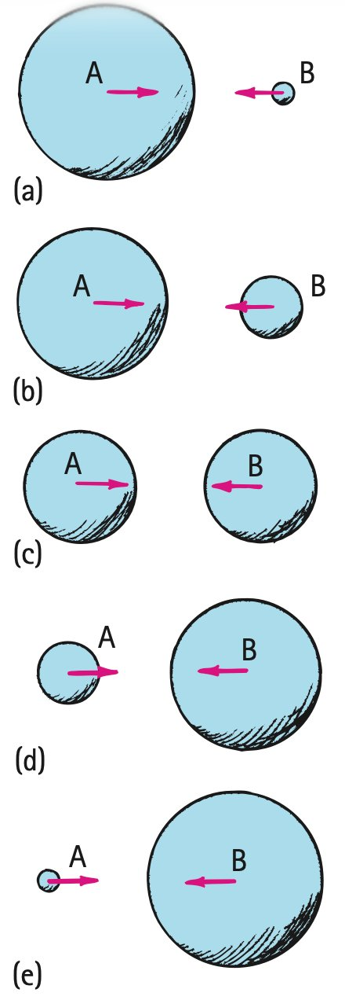

Newton’s Third Law and Interactions
Mathematical idea: Third-law force pairs are equal and opposite but must be assigned to different objects and interpreted relative to a chosen system.
You will identify interaction pairs, draw system boundaries, and explain why equal forces can still produce very different motion changes.
Learning Target
Students will identify force interactions and explain Newton’s Third Law using action-reaction pairs that act on different objects.
I can statements
- I can explain that forces occur as interactions between objects.
- I can identify the action and reaction forces in common situations.
- I can explain why action-reaction forces are equal in strength and opposite in direction.
- I can explain why action-reaction forces do not cancel when they act on different objects.
- I can define a system and decide whether a force is internal or external to that system.
Vocabulary
These are words you will see in this section. Do not define them yet.
- interaction
- Newton’s Third Law
- action force
- reaction force
- force pair
- system
- internal force
- external force
- recoil
Use the preview activity to decide which words you already know, recognize, or do not know yet. Watch for these words in bold when they are first introduced or defined in the reading.
Preview: Skim Before You Read
Directions
Before reading closely, skim the vocabulary list and the section. Look at titles, headings, bold words, pictures, captions, diagrams, tables, and formulas. Do not try to understand everything yet. Your job is to notice what already looks familiar and make predictions about what this section may explain.
Step 1 — Sort the vocabulary. Write each vocabulary word in the column that best matches what you know right now. You may move a word later.
| Know for sure | Recognize | Don’t know yet |
|---|---|---|
Step 2 — Skim the section. Record what catches your attention before you read closely.
| What I noticed | |
|---|---|
| What I predict | |
| What I wonder |
Content: Read, Look, Annotate, Apply
Directions
Read in short chunks. Annotate the prose and the figures together: underline evidence, circle or highlight bold vocabulary, label arrows or measured features, connect a sentence to an image, and write short questions or connections in the margins.
Reading 1: Forces Come from Interactions
Every force is part of an interaction between two objects. When your fingers push on a wall, the wall pushes on your fingers at the same time. The bent fingers in the textbook image are evidence that the wall is exerting a force back.

Image read: Name the two objects in each interaction. Write the force “A on B” and then reverse the object order for the paired force.
The same reasoning applies to objects that are not alive. A hammer exerts a force on a stake while the stake exerts a force on the hammer. Neither object is simply the “giver” while the other is only the “receiver.” Both participate in one interaction.

Image read: Point to the two different objects on which the opposite arrows act. Why would drawing both arrows on the stake be incorrect?
This way of naming forces prevents a common mistake: treating force as something an object stores. A moving object can have momentum and energy, but force appears when objects interact.
Stop and Discuss
- How do the wall and hammer images show that forces require two interacting objects?
- Why is “the hammer has force” less precise than naming the hammer-stake interaction?
Example 1: Name the two forces
A student pushes on a wall with both hands.
- Write one force as “student on wall.”
- Write the paired force by reversing the object order and give its direction relative to the first.
You Try It 1: Swimming interaction
A swimmer pushes water backward with her hands.
- Name the force the swimmer exerts on the water.
- Name the paired force on the swimmer and explain how it relates to her forward motion.
Reading 2: Equal and Opposite—on Different Objects
Newton’s Third Law states that when one object exerts a force on a second object, the second object exerts an equal-magnitude force in the opposite direction on the first. We may label one the action force and the other the reaction force, but the labels can be swapped.
Together they form a force pair. The forces happen simultaneously and act on different objects. That last phrase is essential: two equal and opposite forces acting on the same object may balance, but they are not a third-law pair with each other.
The textbook’s vector treatment reinforces the diagram rule: force arrows show both magnitude and direction. Equal-length opposite arrows in a third-law pair must be attached to the two different interacting objects, not stacked on one object as if they were a balanced-force pair.

Image read: Draw one force arrow on the car and its paired arrow on the truck. Make the arrows equal in length and opposite in direction.
Equal force does not mean equal damage or equal acceleration. A car and truck exert equal interaction forces, but their structures and masses can respond differently. The source summarizes many examples by reversing the object names: tires push road / road pushes tires; rocket pushes gas / gas pushes rocket.

Image read: Choose one row. Box the two objects, then underline the word that reverses which object is acting on which.
Stop and Discuss
- Give the three tests for a third-law pair: magnitude, direction, and which objects the forces act on.
- Why can a small bug and a massive bus exert equal forces on each other but have very different accelerations?
Example 2: Collision pair
A small cart collides with a much more massive cart.
- Compare the force each cart exerts on the other during the collision.
- Explain why their accelerations can still be different.
You Try It 2: Two kicks on one football
Two players kick opposite sides of one football at the same time with equal force.
- Do those two forces form a Newton’s Third Law pair with each other? Explain using the “different objects” test.
- What can be true about the football’s net force if the two kicks are equal and opposite?
Reading 3: A System Boundary Changes the Force Accounting
A system is the object or group of objects chosen for analysis. Drawing a boundary around the system helps decide which forces can change the motion of that system.

Image read: Trace the dashed boundary. The force arrow crosses the boundary, so classify it relative to the orange-only system.
A force between two objects that are both inside the chosen boundary is an internal force. For the combined orange-plus-apple system, the force they exert on each other is internal. Those internal third-law forces cancel in the force sum for the whole system.

Image read: Circle the two internal interaction arrows. Explain why they cannot accelerate the combined system by themselves.
An external force comes from outside the chosen system. In the textbook example, the floor pushes on the apple; if the floor is outside the orange-plus-apple system, that floor force is external and can accelerate the system.

Image read: Mark the force that crosses the system boundary. Label the object outside the system that provides it.
Stop and Discuss
- Why do third-law forces not cancel when you analyze only one of the two interacting objects?
- How does changing from an orange-only system to an orange-plus-apple system change the classification of the orange-apple interaction force?
Example 3: Choose the system
A student stands inside a stalled car and pushes on the dashboard. Treat the student + car as one system.
- Classify the student-dashboard interaction forces as internal or external.
- Explain why these forces cannot accelerate the combined student-car system by themselves.
You Try It 3: Boat and paddler system
A paddler pushes water backward and the water pushes the paddle forward. Define the system as boat + paddler.
- Is the water’s force on the paddle internal or external to this system?
- Explain why that force can change the motion of the boat-paddler system.
Reading 4: Same Interaction Force, Different Acceleration
Third-law forces are equal, but Newton’s Second Law reminds us that acceleration also depends on mass. The textbook’s different-mass sphere sequence shows that the same-size interaction forces can produce very different accelerations.

Image read: Find a pair with very different masses. Which object should have the larger acceleration even though the force arrows are equal?
A cannon and cannonball show the same idea. The cannonball experiences a large acceleration because its mass is small compared with the cannon. The cannon undergoes recoil in the opposite direction with a much smaller acceleration.

Image read: Label the force on the cannonball and the force on the cannon. Then annotate why the accelerations are not equal.
Rocket propulsion is another recoil interaction. The rocket pushes exhaust gas backward; the gas pushes the rocket forward. The rocket does not need air outside it to push against, so the interaction works in space.

Image read: Name the two interacting objects in the rocket example. Draw opposite arrows for the forces each exerts on the other.
Stop and Discuss
- How can third-law forces be equal while the two objects have different accelerations?
- Why does rocket propulsion work in a vacuum?
Example 4: Cannon and cannonball
A cannon fires a cannonball. During the interaction, the cannonball and cannon exert equal-magnitude forces on each other.
- Which object has the larger acceleration? Explain using mass.
- Describe the cannon’s recoil without saying the forces are unequal.
You Try It 4: Bug and bus
A small bug collides head-on with a bus.
- Compare the magnitudes of the interaction forces.
- Compare the magnitudes of the accelerations and explain why they differ.
Vocabulary: Define the Terms
You have now seen these words in the reading, images, and practice. Use this table to consolidate the physics meaning of each term.
| Vocabulary term | Definition |
|---|---|
| interaction | A mutual force relationship between two objects; each object exerts a force on the other. |
| Newton’s Third Law | Whenever object A exerts a force on object B, B exerts an equal-magnitude, opposite-direction force on A. |
| action force | One member of a third-law force pair; the label is arbitrary. |
| reaction force | The other member of the same third-law force pair; it exists simultaneously with the action force. |
| force pair | Two equal and opposite forces from one interaction that act on different objects. |
| system | The object or collection of objects chosen for analysis. |
| internal force | A force between objects that are both inside the chosen system. |
| external force | A force on the system from an object outside the chosen system. |
| recoil | Motion of an object in response to ejecting or accelerating another mass in the opposite direction. |
Summary
- Forces occur as interactions between two objects.
- Newton’s Third Law forces are equal in magnitude, opposite in direction, simultaneous, and act on different objects.
- Action and reaction labels are interchangeable; reversing “A on B” gives “B on A.”
- A system boundary determines which forces are internal and which are external; only external forces can change the motion of the whole chosen system.
- Equal interaction forces can produce different accelerations when the interacting objects have different masses.
- Recoil and rocket propulsion are third-law interactions and do not require pushing on the surrounding air.
Common Mistakes
| Mistake | Why it is tempting | Check instead |
|---|---|---|
| Action happens first and reaction happens later. | The words action/reaction sound sequential. | The two forces are simultaneous parts of one interaction. |
| Equal and opposite means the forces cancel. | Opposite arrows often cancel in a net-force diagram. | Third-law forces act on different objects; only forces on the same chosen system can cancel in its force sum. |
| The bigger object exerts the bigger force. | The bigger object often suffers less acceleration or damage. | Third-law forces are equal; acceleration differences come from mass and other response factors. |
| A moving object “has force.” | Moving objects can cause dramatic interactions. | Force exists during interaction; motion itself is not stored force. |
What is the simplest test that distinguishes a Newton’s Third Law pair from two balanced forces on one object?
A 1000-kg car and a 2000-kg truck exert equal collision forces on each other. Which has the greater acceleration magnitude, and why?
What is one thing you learned in this section? Explain it in at least one complete sentence.
What is one thing from this section you still need to understand or practice more? Be specific.